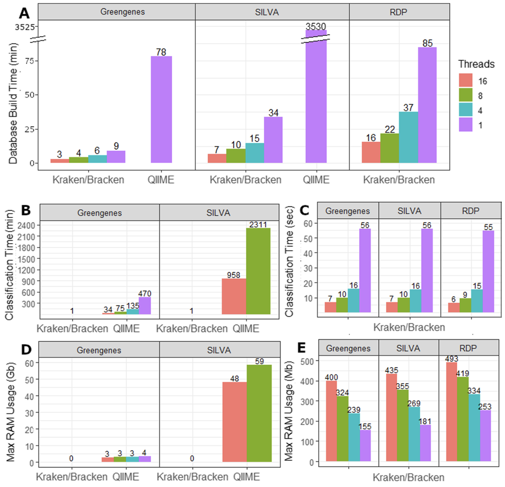
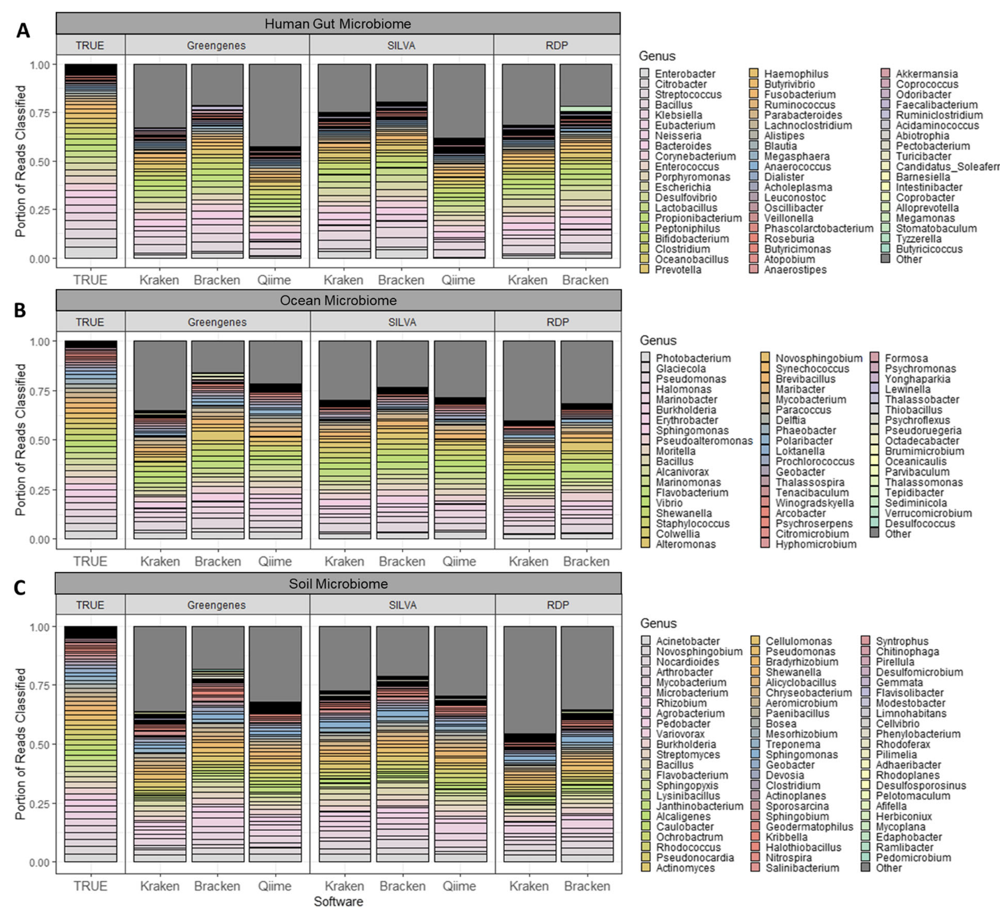
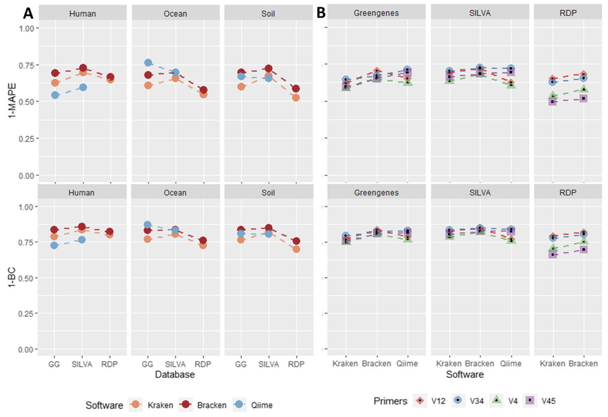

Introduction
上次记录了一下qiime2的扩增子分析流程。但是实际使用时，在最后一步物种注释时卡住了，如果使用常用的feature-classifier方法，我尝试使用unite数据库鉴定了100条ITS序列，居然用了半个小时！尴尬的是，我有整整10万条ASV序列，这得跑到猴年马月。我想到做宏基因组时，千万级数量的reads用kraken做物种注释也不需要这么久，肯定有快的方法的。
然后发现Kraken用于16S已经有文章了：
Lu, J., Salzberg, S.L. Ultrafast and accurate 16S rRNA microbial community analysis using Kraken 2. Microbiome 8, 124 (2020). https://doi.org/10.1186/s40168-020-00900-2
Kraken 2现在支持16S rRNA数据库，可以直接与QIIME和类似系统进行比较。Kraken 2通过其独特的无对齐算法，能够在极短的时间内完成大量序列的分类，并且支持多线程处理，显著提升了分析效率。此外，Kraken 2还结合了Bracken工具，能够更精确地估计物种的相对丰度，尤其是在处理复杂微生物群落时表现出色。
但是Kraken2要用在ITS上的话目前是官方没有支持的，需要手动构建相应数据库，这个折腾了一会，具体方法放在后面了。
Kraken效果
速度快

Kraken 2在速度上的表现非常突出。根据Lu和Salzberg的研究，Kraken 2在生成16S rRNA数据库时，比QIIME 2快得多。例如，使用单线程时，Kraken 2生成Greengenes数据库仅需9分钟，而QIIME 2则需要78分钟。对于更大的SILVA数据库，Kraken 2仅需34分钟，而QIIME 2则需要超过58小时。在分类速度上，Kraken 2同样表现出色，单线程下仅需1分钟即可完成一个样本的分类，而QIIME 2则需要35分钟（使用16线程时）。对于大规模数据分析，Kraken 2的速度优势尤为明显，能够显著缩短分析时间。
更精确

Kraken 2不仅在速度上占优，其分类精度也优于QIIME 2。研究显示，Kraken 2在分类16S rRNA序列时，能够更准确地识别物种，尤其是在处理复杂微生物群落时。Bracken工具进一步提升了Kraken 2的精度，能够更准确地估计物种的相对丰度。通过重新分配Kraken 2在属或更高分类水平上的分类结果，Bracken能够将分类结果细化到种水平，从而提供更精确的物种丰度估计。此外，Kraken 2的每读长分类功能使其能够为每个读长提供详细的分类信息，进一步提高了分析的准确性。

总的来说，Kraken 2和Bracken的组合为16S rRNA数据分析提供了一个快速、高效且精确的解决方案，特别适合处理大规模微生物群落数据。
Kraken-16S
Kraken2是直接支持16S常用的三大数据库的(greengenes，rdp，silva)，用起来也非常简单：
1
2
3
4
5
6
7
8
9
10
11
12
|
#直接构建数据库，TYPE可选greengenes，rdp，silva
kraken2-build --db $DBNAME --special TYPE
#构建完成后就可以鉴定了，内存够的话，1min内都有结果
kraken2 rep-seqs/dna-sequences.fasta --db $DBNAME --out kraken_output --threads 4 --report kraken_report.txt -c 0.05
#可以借助taxonkit得到类似qiime2标准注释文件
cut -f3 kraken_output >tmpid
taxonkit lineage tmpid --data-dir $DBNAME/taxonomy/|taxonkit reformat --data-dir $DBNAME/taxonomy/ -P >tmpres
paste kraken_output tmpres |cut -f2,8>kraken_taxonomy
rm tmpid tmpres
|
Kraken-ITS
ITS一般用Unite数据库注释，但这个kraken2不支持，我尝试将Unite数据库整理为greengenes的格式，然后用build_gg_taxonomy.pl生成names.dmp, nodes.dmp, seqid2taxid并建立kraken数据库，最后进行ITS序列鉴定是可行的。
具体步骤如下：
-
Unite官网下载fasta文件，https://unite.ut.ee/repository.php ，点击General FASTA release下载解压，我用的是sh_general_release_dynamic_all_04.04.2024.fasta文件。
-
运行以下命令建立数据库，注意split_fasta.py和build_gg_taxonomy.pl在后面，记得拷贝过去用。
1
2
3
4
5
6
7
8
9
10
11
12
13
14
15
16
17
18
19
20
|
# 手动构建目录结构
mkdir ~/db/kraken_unite/
pushd ~/db/kraken_unite/
mkdir -p data taxonomy library
pushd data
# 用split_fasta.py把unite数据库提供的fasta格式整理为greengenes的
GG_VERSION=unite_all_04.04.2024
./split_fasta.py -i ../sh_general_release_dynamic_all_04.04.2024.fasta -o ${GG_VERSION}
# 用build_gg_taxonomy.pl进一步生成names.dmp, nodes.dmp, seqid2taxid
perl ../build_gg_taxonomy.pl "${GG_VERSION}_taxonomy.txt"
popd
mv data/names.dmp data/nodes.dmp taxonomy/
mv data/seqid2taxid.map .
mv "data/${GG_VERSION}.fa" library/unite.fna
popd
# 用kraken2-build构建用于注释的数据库
kraken2-build --db ~/db/kraken_unite --build --threads 4
|
- 鉴定获得output文件
1
2
|
#1秒出结果
kraken2 rep-seqs/dna-sequences.fasta --db ~/db/kraken_unite/ --out kraken_output --threads 4 --report kraken_report.txt -c 0.05
|
- 借助taxonkit获取标准注释文件，taxonkit这软件也很好用。
1
2
3
4
5
|
cut -f3 kraken_output >tmpid
taxonkit lineage tmpid --data-dir ~/db/kraken_unite/taxonomy/|taxonkit reformat --data-dir ~/db/kraken_unite/taxonomy/ -P >tmpres
paste kraken_output tmpres |cut -f2,8>kraken_taxonomy
rm tmpid tmpres
|
最后的结果就是类似下面的形式：
1
2
3
|
0229a5c7f887dad960b40a0505cf9776 k__Fungi;p__Ascomycota;c__Saccharomycetes;o__Saccharomycetales;f__Saccharomycetales_fam_Incertae_sedis;g__Candida;s__Candida Candida_albicans
f88d9001e10f6d37672514972e6a199e k__Fungi;p__Ascomycota;c__Saccharomycetes;o__Saccharomycetales;f__Saccharomycetales_fam_Incertae_sedis;g__Candida;s__Candida Candida_albicans
c3519270e269b92d3577ed450032bbc4 k__Fungi;p__Ascomycota;c__Eurotiomycetes;o__Eurotiales;f__Aspergillaceae;g__Penicillium;s__
|
补充脚本信息：
1.split_fasta.py：
1
2
3
4
5
6
7
8
9
10
11
12
13
14
15
16
17
18
19
20
21
22
23
24
25
26
27
28
29
30
31
32
33
34
35
36
37
38
39
|
#!/share/home/jianglab/pengchen/miniconda3/bin/python3.9
import argparse
def process_fasta(input_file, unite_fa, unite_taxonomy):
with open(input_file, 'r') as infile, open(unite_fa, 'w') as fa_out, open(unite_taxonomy, 'w') as tax_out:
for line in infile:
if line.startswith('>'):
# Extract information from the header
header = line.strip()
parts = header.split('|')
accession = parts[1]
taxonomy = parts[-1]
formatted_taxonomy = taxonomy.replace(';', '; ').replace(' ', '').replace(';', '; ')
# Write to unite.fa
fa_out.write(f">{accession}\n")
# Write to unite_taxonomy.txt
tax_out.write(f"{accession}\t{formatted_taxonomy}\n")
else:
# Write sequence lines to unite.fa
fa_out.write(line)
def main():
parser = argparse.ArgumentParser(description="Process a fasta file to generate unite.fa and unite_taxonomy.txt.")
parser.add_argument("-i", required=True, help="Input fasta file")
parser.add_argument("-o", required=True, help="Output prefix for unite.fa and unite_taxonomy.txt")
args = parser.parse_args()
input_file = args.i
output_prefix = args.o
unite_fa = f"{output_prefix}.fa"
unite_taxonomy = f"{output_prefix}_taxonomy.txt"
process_fasta(input_file, unite_fa, unite_taxonomy)
if __name__ == "__main__":
main()
|
2.build_gg_taxonomy.pl : https://github.com/DerrickWood/kraken2/blob/master/scripts/build_gg_taxonomy.pl
3.taxonkit: https://github.com/shenwei356/taxonkit
References
- Lu, J., Salzberg, S.L. Ultrafast and accurate 16S rRNA microbial community analysis using Kraken 2. Microbiome 8, 124 (2020). https://doi.org/10.1186/s40168-020-00900-2
- https://github.com/DerrickWood/kraken2/wiki/Manual#custom-databases
- https://github.com/DerrickWood/kraken2/issues/97